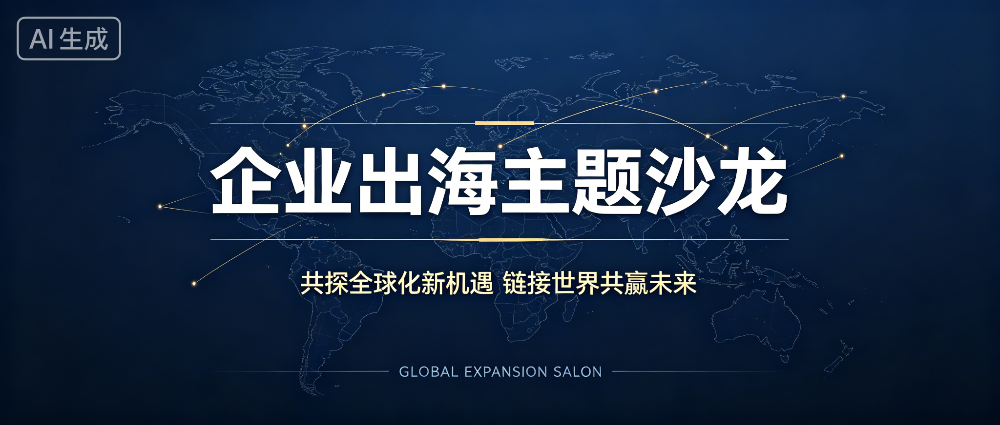
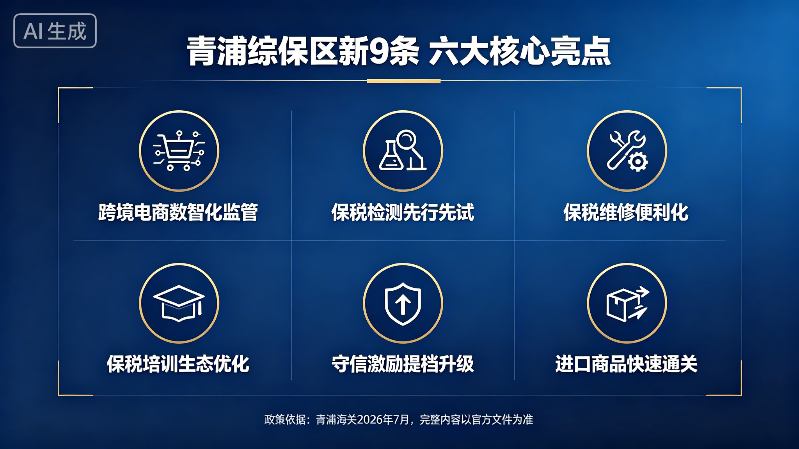

课堂演示成品全集
8月28日真实企业出海沙龙 · 提示词工程全流程实战
📋 真实案例（有公开来源）
"e企聚势·数智扬帆"共探企业出海新机遇主题沙龙
时间：2026年8月28日下午｜地点：青浦·e通世界产业园
主办：青浦区新联会、e通世界产业园｜支持：青浦区人民检察院
性质：上海统一战线服务青年创新创业工作年度第40个矩阵项目
内容：7场主题分享，覆盖跨境电商、涉外法律、跨境金融
嘉宾：引航咨询合伙人田勇、亚马逊全球开店高级经理阿肯、上海跨境公服业务总监蒋启铖等
来源：上观新闻 2026-09-04
1新闻稿：三级对比（完整内容）
同一个活动，三种提问方式，三种完全不同的结果——所有文字完整展示
【城市】举办企业出海沙龙：解码全球化新阶段
【日期】, 由【主办单位】主办、以 "【活动主题】" 为主题的企业出海沙龙在【活动地点】成功举办。来自【行业领域】的【数字】余家企业负责人、行业专家及跨境服务机构的代表齐聚一堂，围绕企业出海的战略路径、合规经营与本地化深耕等议题展开深入交流。
当前，中国企业出海正经历从 "产品走出去" 到 "品牌走进去" 的结构性转变。数据显示，2025年中国对外投资流量达2135.8亿美元。主旨分享环节，【嘉宾1姓名、职务】以 "【演讲主题】" 为题发表演讲。【嘉宾2姓名、职务】则从合规与风险防控角度给出建议。
圆桌对话环节，与会嘉宾围绕 "【圆桌议题】" 展开讨论。主办方【主办单位】相关负责人表示，未来将常态化举办此类交流活动，助力更多中国企业 "走进去、走得稳"。
⚠️ AI还列了需要补充的信息清单：活动名称、主题、主办方、日期、城市、场地、参会企业数量、嘉宾姓名职务等——全是【】，需要你自己填。
❌ AI先去查了出海趋势，但因为你没给具体信息，它只能给一篇"填空模板"——所有关键信息都是【】，发布前要自己补全。
提示词：
你是10年经验政务新闻编辑。写一篇"e企聚势·数智扬帆"企业出海沙龙新闻稿：600字，分三段（导语/主体/结尾），语气客观严谨，突出跨境电商和政策支持。
"e企聚势·数智扬帆"企业出海沙龙在【城市】举办
【日期】, 以 "e企聚势·数智扬帆" 为主题的企业出海沙龙在【地点】成功举办。本次沙龙由【主办单位】主办、【支持单位】协办，【单位】相关负责人、行业专家及跨境电商、数字贸易领域【数字】余家企业代表齐聚一堂，聚焦全球市场新机遇与跨境电商新路径展开深入交流。
主旨分享环节，与会嘉宾围绕跨境电商高质量发展作交流发言。会议指出，当前我国跨境电商发展势头强劲，全国跨境电商综合试验区已达178个；海关总署自2026年4月1日起在全国推广跨境电商零售出口商品跨关区退货模式，出口退运商品税收优惠、海外仓 "离境即退税" 等政策红利持续释放，为企业 "卖全球、卖得好" 提供坚实支撑。
政策支持是本次沙龙的核心议题。会议认为，跨境电商已被提升至国家战略高度，跨境贸易便利化专项行动在45个城市集中开展。主办方表示，下一步将持续搭建政企对接与行业交流平台，帮助企业用好用足政策红利，以数智化赋能更多企业高质量 "走出去"。
⚠️ 有了具体政策内容（178个综试区、跨关区退货、离境即退税），但活动具体信息（日期、城市、地点、主办单位）还是【】。
✅ 角色准确、有具体政策数据、三段式结构、语气严谨。但活动信息还是【】——因为你没给素材，AI只能"猜"政策，不能"写"事实。
提示词+完整素材：
根据以下真实活动素材，写一篇政务新闻通稿，800字左右，分四段（导语、活动概况、核心分享、意义展望），语气客观严谨，突出青浦海关和综保区对企业出海的支持。
活动素材：
· 活动名称："e企聚势·数智扬帆"共探企业出海新机遇主题沙龙
· 时间：2026年8月28日
· 地点：上海青浦e通世界产业园
· 主办：青浦区新的社会阶层人士联谊会、e通世界产业园
· 支持：青浦区人民检察院
· 性质：上海统一战线年度第40个矩阵项目
· 内容：7场主题分享
· 嘉宾：引航咨询合伙人田勇、亚马逊全球开店高级经理阿肯、上海跨境公服业务总监蒋启铖、青浦综合保税区招商发展部相关负责人等
· 核心议题：跨境电商出海、海外仓布局、品牌合规、数智化转型
"e企聚势·数智扬帆"共探企业出海新机遇主题沙龙在青浦举办
8月28日，"e企聚势·数智扬帆"共探企业出海新机遇主题沙龙在上海青浦e通世界产业园成功举办。本次活动由青浦区新的社会阶层人士联谊会、e通世界产业园共同主办，青浦区人民检察院给予支持，系上海统一战线年度第40个矩阵项目。沙龙聚焦跨境电商出海、海外仓布局、品牌合规、数智化转型等议题。
沙龙设置7场主题分享，邀请引航咨询合伙人田勇、亚马逊全球开店高级经理阿肯、上海跨境公服业务总监蒋启铖、青浦综合保税区招商发展部相关负责人等业界专家，围绕企业出海全链条的堵点难点作专题讲解。来自跨境电商、数字贸易、先进制造等领域的企业代表参加活动。
分享环节，嘉宾们从不同维度为企业出海"把脉支招"。田勇结合实战案例分析合规与风险挑战；阿肯分享海外仓建设及本地化运营实操经验；蒋启铖介绍数字化服务平台如何助力企业提升通关、结算效率；青浦综保区招商发展部相关负责人重点解读保税仓储、通关便利、出口退税等政策优势，介绍"离境即退税"等最新举措的降本增效红利。
本次沙龙是统一战线发挥智力密集、联系广泛优势、服务中心大局的生动实践。主办方表示，将持续深化政企园联动，常态化开展政策宣讲与资源对接，帮助更多企业用好青浦综合保税区等开放平台政策红利。
💡 AI诚实说明：素材中没有直接提到"青浦海关"，所以通过综保区职能体现海关支持，没有虚构内容——这就是上下文工程的价值：AI根据真实素材"写"，不是"编"。
🏆 完整成品！所有信息填好，有具体嘉宾姓名职务和分享内容，四段式结构，AI还诚实说明没有虚构海关出席。给了完整素材，AI就不是"编新闻"，是"写新闻"。
2公众号封面图：三级对比（大图+差异标注）
同一个活动，三种提问方式，三张完全不同的封面图——从"通用泛化"到"专业落地"到"内容匹配"
提示词：
帮我生成一张公众号封面图：企业出海主题沙龙，横版，商务风格
❌ 通用商务风格，地球+连线，看起来还行。但没有具体活动主题"e企聚势·数智扬帆"，没有时间地点，没有政策内容——放哪个活动上都能用，等于没特色。
提示词：
再帮我生成一张公众号封面图：政务新媒体封面，横版2.35:1，深蓝渐变，左文字右视觉，主标题"e企聚势 数智扬帆"，副标题"共探企业出海新机遇"，右侧集装箱+飞机+地球
✅ 构图专业、元素准确（地球+飞机+集装箱）、深蓝政务风，有了具体活动主题和风格。文字渲染清晰，主副标题都正确。
⚠️ 但注意：还是"好看但不落地"——缺具体活动信息：时间、地点、政策内容、参会规模都没有。放哪个"企业出海"活动上都能用，没有针对性。
这就是提示词工程的局限：你告诉AI"做什么"和"做成什么样"，但没告诉AI"这件事的具体背景和内容"。
提示词+上下文：
再帮我生成一张公众号封面图：根据以下文章内容生成封面。8月28日青浦e通世界产业园举办"e企聚势·数智扬帆"企业出海沙龙，7位专家分享，重点是青浦综保区政策支持（保税仓储、通关便利、离境即退税）。体现企业出海+跨境电商+政策支持+青浦元素，会议室场景，企业家交流，横版。
🏆 内容最完整！有活动主题"e企聚势·数智扬帆"、活动名"企业出海沙龙"、时间地点"青浦e通世界产业园·8月28日"、三个政策标签"保税仓储/通关便利/离境即退税"，右侧会议室场景+投影世界地图，企业家围坐交流。
AI看到了完整文章内容，不是"猜"主题，是"理解"主题后生成的。这就是上下文工程的力量：给AI完整的背景信息，它才能产出真正落地的内容。
3一稿多改：四种用途成品（完整内容）
同一个素材，改提示词的受众和语气，20分钟出四种成品——所有文字完整展示
真实提示词（角色+任务+要求+参考风格）：
你是10年经验政务新闻编辑。根据活动素材写新闻通稿，用于对外发布和媒体供稿：800字，四段（导语/活动概况/核心分享/意义展望），客观严谨，不用"重磅""震惊"，突出综保区政策支持。参考海关总署官网风格。
"e企聚势·数智扬帆"共探企业出海新机遇主题沙龙在上海青浦举办
8月28日，"e企聚势·数智扬帆"共探企业出海新机遇主题沙龙在上海青浦e通世界产业园举办。活动由青浦区新的社会阶层人士联谊会、e通世界产业园共同主办，青浦区人民检察院给予支持，系上海统一战线年度第40个矩阵项目。沙龙以服务企业高质量"走出去"为目标，聚焦跨境电商出海、海外仓布局、品牌合规、数智化转型等议题，邀请跨境电商领域专家、专业服务机构负责人及区内企业代表面对面交流，共商出海良策。
据介绍，沙龙共设置7场主题分享，邀请引航咨询合伙人田勇、亚马逊全球开店高级经理阿肯、上海跨境公服业务总监蒋启铖、青浦综合保税区招商发展部相关负责人等担任主讲嘉宾，围绕企业出海全链条的堵点难点作专题解读。来自跨境电商、数字贸易、先进制造等领域的企业代表参加活动，现场互动气氛热烈。作为上海统一战线矩阵项目的重要组成部分，本次活动立足园区一线，联动平台机构与专业服务资源，为企业掌握政策、对接资源搭建了直接通道。
分享环节，与会嘉宾从不同维度为企业出海提出务实建议。引航咨询合伙人田勇结合实践案例，就出海合规与风险防控作专题讲解，建议企业健全覆盖法务、财税、数据安全的全链条合规体系；亚马逊全球开店高级经理阿肯围绕海外仓布局与本地化运营分享实操经验；上海跨境公服业务总监蒋启铖介绍了数字化服务平台在通关、结算等环节的赋能作用。
综保区政策支持是本次沙龙的重点内容。据介绍，目前全国跨境电商综合试验区已达178个，跨境电商出口退运商品税收优惠、海外仓货物"离境即退税"、零售出口商品跨关区退货等政策措施相继实施。青浦综合保税区招商发展部相关负责人表示，综保区作为海关特殊监管区域，在保税仓储、通关便利、出口退税等方面具有独特优势，企业可依托综保区平台降低物流与资金成本、提升跨境经营效率，欢迎更多企业了解并用足用好相关政策。
本次沙龙是统一战线发挥智力密集、联系广泛优势，服务经济高质量发展的一次具体实践。主办方表示，将以此次活动为契机，持续深化政企园联动，常态化开展政策宣讲与资源对接，帮助更多企业用好综保区等开放平台政策红利，助力企业高质量"走出去"，在服务构建新发展格局中展现新作为、贡献新力量。
真实提示词（角色+任务+要求+参考风格）：
你是区委统战部文字秘书。把上面这篇新闻通稿改写成内部工作动态，用于单位内部简报和向上汇报：300字以内，分举措/成效/下一步三点，简洁务实，不用修饰性语言，突出数据和成果。参考统战系统内部简报。
区新联会举办"e企聚势·数智扬帆"企业出海主题沙龙
一、举措。8月28日，区新联会联合e通世界产业园举办"e企聚势·数智扬帆"共探企业出海新机遇主题沙龙，区检察院提供支持，系上海统一战线年度第40个矩阵项目。活动设7场主题分享，邀请引航咨询、亚马逊全球开店、上海跨境公服、青浦综保区等单位专家，围绕跨境电商出海、海外仓布局、品牌合规、数智化转型授课，区内跨境电商、数字贸易等领域企业代表参加。
二、成效。企业现场掌握综保区保税仓储、通关便利、出口退税及"离境即退税"等政策要点，获得合规经营、海外仓建设实操指导；活动纳入市级统战矩阵项目序列，扩大了区新联会工作显示度。
三、下一步。区新联会将深化政企园联动，常态化开展政策宣讲与资源对接，推动企业用好开放平台政策，助力企业高质量"走出去"。
真实提示词（角色+任务+要求+参考风格）：
你是政务新媒体小编。把上面这篇新闻通稿改写成公众号推文，面向企业读者：500字，标题20字内且吸引企业读者，正文口语化但不失严谨，分三个小标题，不用"重磅""震惊"，结尾加互动引导。参考"上海发布"公众号风格。
想出海的企业，这场沙龙讲透了
为帮助区内企业更好"走出去"，8月28日，"e企聚势·数智扬帆"共探企业出海新机遇主题沙龙在青浦e通世界产业园举行。活动由区新联会联合e通世界产业园主办，区检察院提供支持，也是上海统一战线年度第40个矩阵项目。现场7场分享，干货满满。
01 出海这件事，别急着"拍脑袋"
"不出海，就出局"正在成为越来越多企业的共识。但海外仓怎么布、品牌怎么做、数据安全怎么守，每一步都有讲究。这场沙龙，就是请来专业的人，把这些问题讲清楚。
02 7场分享，从合规讲到退税
引航咨询合伙人田勇讲合规与风险防控，建议企业先把法务、财税、数据安全的体系建起来；亚马逊全球开店高级经理阿肯分享海外仓和本地化运营经验；上海跨境公服业务总监蒋启铖介绍数字化服务怎么帮企业提效率。最受关注的，是青浦综保区相关负责人对保税仓储、通关便利、出口退税等政策的解读——"离境即退税"等新举措，能实实在在帮企业降成本、快回款。
03 想用政策，先找对门路
对青浦企业来说，家门口的综保区就是现成的"出海跳板"。货物先入区、后缴税，离境即可申请退税，政策用好了，资金压力小一截。具体怎么办，可直接咨询综保区招商部门，先问清楚、再动手。
后续，主办方还将常态化开展政策宣讲和资源对接。你也在准备出海吗？欢迎在评论区聊聊你的困惑，说不定下一场活动，就是为你准备的。
真实提示词（角色+任务+要求+参考风格）：
你是政策解读专家。基于上面新闻通稿提到的综保区政策，写一篇面向中小企业老板的政策解读：400字大白话，可以打比方，结构是"对企业有什么用→怎么申请→注意事项"，不用专业术语堆砌。参考中国政府网"政策解读"栏目。
综保区政策，中小企业出海怎么用？大白话讲清楚
在8月28日青浦举办的企业出海主题沙龙上，青浦综保区相关负责人把保税仓储、通关便利、出口退税等政策掰开揉碎讲了一遍。用大白话总结，对企业有三件事最实在。
一、对企业有什么用
一是保税仓储，像"先存钱、后买单"。货物进综保区仓库，先不缴税，等真正卖出去了再结算。货可以先囤着，钱慢慢转，资金压力小不少。
二是"离境即退税"，像"干完活当场结账"。海外仓货物报关离境后，符合条件的就能申请退税，不用等销售回款，钱回笼更快，现金流更宽裕。
三是通关更顺。综保区通关便利措施多，进出货效率高。对跨境电商来说，省时就是省钱。
二、怎么申请
先确认资格：在综保区注册的企业，或委托区内企业开展业务。然后正常报关、真实出口；货物离境后，准备好报关单、物流单、订单等材料，通过电子税务局申报退税。具体流程建议先咨询综保区招商部门或税务专管员，先问清楚再办。
三、注意事项
必须有真实出口业务，虚报、凑单骗退税是红线，查出来要担责；
单据留全：报关单、物流单、订单、付款记录，一样别少；
政策口径会调整，以海关、税务部门最新公告为准，不要轻信"包退""快退"之类的代办话术。
4政策宣传海报：提示词工程实战
用完整公式（角色+任务+要求+例子）生成的海报，含完整提示词
生成这张海报的完整提示词
【角色】
你是政务视觉设计师，擅长设计海关系统政策宣传海报。
【任务】
为"青浦综保区新9条政策亮点"设计一张政策宣传海报。
【要求】
竖版，深蓝政务风格，顶部大标题"青浦综保区新9条 政策亮点"，副标题"企业出海更顺 营商环境更优"，中间分两行排列6个核心措施（每个有金色边框圆形图标+加粗标题，文字要大要清晰）：第一行：跨境电商数智化监管、保税检测先行先试、保税维修便利化；第二行：保税培训生态优化、守信激励提档升级、进口商品快速通关。底部注明政策依据，最底部"青浦海关 2026"。
【上下文工程·关键】
6个措施全部来自官方公开报道（上海市政府官网2026-07-14），没有让AI自己编政策内容。标题用"政策亮点"而不是"九大措施"，因为完整9条未全部公开确认。底部注明"完整内容以官方文件为准"。
⚠️ 上下文工程教学点：做政策类内容前，必须先查官方来源确认准确内容，绝对不能让AI自己编政策。查不到完整的，就用已确认的内容，标题用"政策亮点"而不是"九大措施"，底部注明来源。这就是"先有确定的证据，再落地图片或文章"。
5公众号排版完整成品
从封面图到文中配图到互动区，完整的一篇公众号推文——所有内容完整展示
‹
青浦统战
⋯

想出海的企业，这场沙龙讲透了
为帮助区内企业更好"走出去"，8月28日，"e企聚势·数智扬帆"共探企业出海新机遇主题沙龙在青浦e通世界产业园举行。
活动由区新联会联合e通世界产业园主办，区检察院提供支持，也是上海统一战线年度第40个矩阵项目。现场7场分享，干货满满。
01 出海这件事，别急着"拍脑袋"
"不出海，就出局"正在成为越来越多企业的共识。但海外仓怎么布、品牌怎么做、数据安全怎么守，每一步都有讲究。这场沙龙，就是请来专业的人，把这些问题讲清楚。
02 7场分享，从合规讲到退税
引航咨询合伙人田勇讲合规与风险防控；亚马逊全球开店高级经理阿肯分享海外仓和本地化运营经验；上海跨境公服业务总监蒋启铖介绍数字化服务怎么帮企业提效率。最受关注的，是青浦综保区相关负责人对保税仓储、通关便利、出口退税等政策的解读——"离境即退税"等新举措，能实实在在帮企业降成本、快回款。

03 想用政策，先找对门路
对青浦企业来说，家门口的综保区就是现成的"出海跳板"。货物先入区、后缴税，离境即可申请退税，政策用好了，资金压力小一截。具体怎么办，可直接咨询综保区招商部门，先问清楚、再动手。
后续，主办方还将常态化开展政策宣讲和资源对接。
你也在准备出海吗？欢迎在评论区聊聊你的困惑
说不定下一场活动，就是为你准备的～
#企业出海
#跨境电商
#青浦综保区
#政策红利
#上海青浦
AI生成的完整排版方案（真实跑豆包）
📝 完整提示词
你是政务新媒体资深编辑。基于上面这篇新闻通稿，设计一篇完整的微信公众号推文排版方案，面向企业读者。要求：1.给出3个备选标题（每个不超过20字，吸引企业读者，不用"重磅""震惊"）；2.封面图设计建议（主题、风格、元素、构图）；3.正文结构（开头导语+三个小标题+结尾互动）；4.文中配图建议（配几张图、每张图的内容和风格）；5.互动区设计（结尾提问引导评论）；6.5个话题标签。参考"上海发布"公众号排版风格。
🏷️ AI给出的3个备选标题
① 出海不踩坑，青浦这场沙龙给你讲明白（16字）
② 想出海的企业注意，这些政策红利别错过（17字）
③ 从合规到退税，企业出海功课一次补齐（15字）
分别从"避坑""红利""干货"三个角度切入
🖼️ 封面图设计建议
主题：企业扬帆出海、政企协同护航
风格：政务蓝绿主色调扁平插画风
元素：货轮+陆家嘴天际线+虚线航线+集装箱
构图：航线对角线贯穿，主体居左下、标题居右上
配色：深蓝（稳重）+青绿（数智）+白与浅金点缀
📊 文中配图建议（4张）
图1：活动现场全景/签到台（实拍横版16:9）
图2：嘉宾演讲特写（实拍中景，突出讲台与屏幕）
图3：企业代表现场交流/答疑互动（实拍抓拍）
图4：综保区政策要点图解（信息图，蓝绿色系）
💬 互动区设计
"你所在的行业，出海时最头疼的是哪一步？是海外仓、品牌合规，还是退税回款？欢迎在评论区聊聊，我们会选取有代表性的问题，请专家在下一期内容中解答。"
🏷️ 5个话题标签
#企业出海 #跨境电商 #青浦综保区 #政策红利 #上海青浦
✅ 这篇推文包含什么
按AI排版方案实现的完整成品：封面图+口语化正文+文中配图+互动引导+话题标签
🚀 进阶：AI直接输出排版好的HTML
提示词关键：在要求里加一句"用HTML格式输出，我会直接复制到公众号编辑器"
AI输出：带内联样式的完整HTML（政务蓝#0b57a4主题），包含：
• h2小标题（带蓝色左边框）
• 重点内容<strong>加粗（蓝色）
• 配图位置标注<!-- 配图：xxx -->
• blockquote结尾互动区（蓝色背景）
使用方法：复制HTML → 公众号编辑器"导入HTML"或用第三方排版工具粘贴 → 替换配图 → 发布
💡 这就是上下文工程：告诉AI"输出格式"，它就直接给你能用的成品，而不是只给方案。
6AI直接排版HTML：从提示词到成品（真实跑豆包）
告诉AI"用HTML格式输出"，它直接给你带政务蓝样式的成品，复制到公众号编辑器就能用
📝 完整提示词
【角色】
你是政务新媒体资深编辑，擅长"上海发布""绿色青浦"风格的公众号排版。
【任务】
把新闻通稿改写成排版好的微信公众号推文，用HTML格式输出（我会直接复制到公众号编辑器）。
【要求】
1. 3个备选标题（≤20字，不用"重磅""震惊"）
2. 正文HTML：导语+3个h2小标题+配图位置标注+blockquote结尾互动
3. 政务蓝色主题，简洁大气，正式但不生硬
4. 重点内容用<strong>加粗
5. 5个话题标签
6. 不要解释，直接给标题+HTML+标签
【参考风格】
"上海发布"公众号
💡 关键就是这一句："用HTML格式输出，我会直接复制到公众号编辑器"——告诉AI输出格式，它就直接给你能用的成品。
🎨 AI输出的HTML渲染效果（真实生成）
8月28日，一场专门为"想出海"的企业准备的沙龙，在青浦e通世界产业园举行。活动由青浦区新的社会阶层人士联谊会联合e通世界产业园主办，青浦区人民检察院给予支持，也是上海统一战线年度第40个矩阵项目。7场主题分享，从海外仓、合规到退税，把出海的门道一次讲透。
📷 配图1：活动现场全景/主题背板
出海是机会，也是道"考题"
"不出海，就出局"正在成为越来越多企业的共识。但跨境电商出海、海外仓布局、品牌合规、数智化转型，每一步都藏着门道。这场沙龙，就是请来一线专家，把企业最关心的堵点难点逐个拆解。
7场分享，把"出海功课"讲透了
引航咨询合伙人田勇结合实战案例，分析出海合规与风险挑战；亚马逊全球开店高级经理阿肯分享海外仓建设与本地化运营经验；上海跨境公服业务总监蒋启铖介绍数字化服务平台如何助力通关、结算提速。
最受关注的，是青浦综合保税区招商发展部相关负责人对保税仓储、通关便利、出口退税等政策优势的解读——特别是"离境即退税"等最新举措，实实在在帮助企业降本增效。
📷 配图2：嘉宾演讲特写
政策就在身边，综保区是"神助攻"
对青浦企业来说，家门口的综保区就是现成的"出海跳板"——货物先入区、后缴税，离境即可申请退税，政策用好了，资金压力小一截。
主办方表示，将持续深化政企园联动，常态化开展政策宣讲与资源对接，帮助更多企业用好青浦综合保税区等开放平台政策红利。
📷 配图3：企业代表现场交流
你所在的行业，出海时最头疼的是哪一步？是海外仓布局、品牌合规，还是退税回款？欢迎在评论区聊聊，我们会选取有代表性的问题，请专家在下一期内容中解答。觉得有用，别忘了点赞、在看、转发给需要的朋友。
🏷️ AI给的3个标题：①出海不踩坑，青浦这场沙龙给你讲明白 ②想出海的企业注意，这些政策红利别错过 ③从合规到退税，企业出海功课一次补齐
🏷️ 5个标签：#企业出海 #跨境电商 #青浦综保区 #政策红利 #上海青浦
💻 AI输出的HTML代码（可直接复制）
点击展开/收起HTML代码
<div style="max-width:677px;margin:0 auto;font-family:-apple-system,BlinkMacSystemFont,'PingFang SC','Microsoft YaHei',sans-serif;color:#333333;">
<p style="font-size:16px;line-height:1.8;...">8月28日，一场专门为"想出海"的企业准备的沙龙...</p>
<!-- 配图1：活动现场全景 -->
<h2 style="font-size:19px;color:#0b57a4;border-left:4px solid #0b57a4;...">出海是机会，也是道"考题"</h2>
<p>...</p>
<h2 style="...">7场分享，把"出海功课"讲透了</h2>
<p>...<strong style="color:#0b57a4;">通关、结算提速</strong>...</p>
<!-- 配图2：嘉宾演讲特写 -->
<h2 style="...">政策就在身边，综保区是"神助攻"</h2>
<p>...<strong style="color:#0b57a4;">货物先入区、后缴税，离境即可申请退税</strong>...</p>
<!-- 配图3：企业代表现场交流 -->
<blockquote style="background:#eef4fb;border-left:4px solid #0b57a4;...">
你所在的行业，出海时最头疼的是哪一步？...
</blockquote>
</div>
✅ 使用方法：复制HTML代码 → 公众号编辑器"导入HTML"或用135编辑器/秀米粘贴 → 替换配图位置的真实照片 → 发布。整个过程5分钟搞定。
7如何实现：从素材到成品的完整路径
万能提示词公式 + 上下文工程 = 20分钟出全套宣传品。学员回去照着做就行。
第一步：记住万能提示词公式（所有文体通用）
💡 就这四样，说清楚了，AI输出质量立刻上一个台阶。说不清楚，AI只能猜。
第二步：上下文工程——给AI配齐背景材料
Level 1（普通交代）：只说"帮我写个新闻稿" → AI只能瞎猜，给你填空模板
Level 2（提示词工程）：用公式说清角色+任务+要求 → AI知道怎么写，但缺具体信息，还是有【】占位符
Level 3（上下文工程）：公式 + 完整活动素材（时间/地点/主办/嘉宾/内容）→ AI直接出成品，所有信息填好
💡 斯坦福大学2026年CS224G原话："别只改提示词，要设计AI周围的完整信息环境。" 给的材料越全，AI越不用猜。
第三步：四个成品的实现路径（照着做就行）
📰 新闻通稿
1. 准备素材：活动时间、地点、主办单位、嘉宾姓名职务、活动内容
2. 写提示词：角色（政务编辑）+ 任务（写通稿）+ 要求（800字四段式）+ 参考（海关总署风格）
3. 喂给AI：提示词 + 完整素材一起发
4. 人工审核：核对数据、口径、嘉宾职务，修改后发布
📋 一稿多渠道分发
1. 先出通稿：用上面的方法先出一篇新闻通稿
2. 改内部动态：角色（统战秘书）+ 任务（改写）+ 要求（300字三点式）+ 参考（内部简报）
3. 改公众号：角色（新媒体小编）+ 任务（改写）+ 要求（500字三小标题）+ 参考（上海发布）
4. 改政策解读：角色（政策专家）+ 任务（解读）+ 要求（400字大白话）+ 参考（中国政府网）
🖼️ 封面图/海报
1. 写提示词：主体（活动主题）+ 场景（会议室/口岸）+ 风格（深蓝政务风）+ 画幅（横版2.35:1）
2. 上下文升级：把文章内容也告诉AI，让它根据文章生成匹配的封面
3. AI生成：豆包/即梦直接生成，40秒出图
4. 人工检查：重点检查文字！AI生图的中文字可能出错或不清晰，必须逐字核对
📱 公众号完整排版
1. 要排版方案：角色（资深编辑）+ 任务（设计排版）+ 要求（标题/封面/正文/配图/互动/标签）+ 参考（上海发布）
2. AI给方案：3个备选标题、封面图建议、正文结构、4张配图建议、互动设计、标签
3. 按方案实现：用AI生成的封面图+配图，按AI给的结构排版
4. 人工终审：标题、正文、配图、标签全部核对后发布
学员回去后的操作清单（第一次用AI做宣传品）
☐ 打开豆包（手机/电脑都行），注册登录
☐ 准备好活动素材（时间/地点/主办/嘉宾/内容），存成文本
☐ 用万能公式写提示词：角色+任务+要求+参考风格
☐ 提示词+素材一起发给AI，等30秒出初稿
☐ 人工审核：核对数据、口径、嘉宾职务、文字错误
☐ 需要其他渠道版本？换个角色和要求，让AI基于通稿改写
☐ 需要配图？用生图提示词（主体+场景+风格+画幅）生成
☐ 记住：AI出初稿，人工做终审，三审三校缺一不可
完整流程走完，你学到了什么？
🎯
提示词工程
万能公式：角色+任务+要求+例子。一个公式搞定所有文体，说清四要素，结果就精准。
📚
上下文工程
给完整素材，AI不是"编"而是"写"。提示词决定方向，上下文决定深度。
🔄
一稿多改
同一素材，改受众和语气，20分钟出新闻通稿、内部动态、公众号、政策解读四种成品。
🖼️
AI生图
封面图、海报、信息图都能生成。但AI画中文经常出错（如"数智"→"智智"），必须人工检查。
✅
人工终审
AI出初稿，人工做终审。数据、口径、文字逐字核对，三审三校缺一不可。
🚀
效率革命
以前改四版要半天，现在20分钟搞定。把"写作"变成"审改"，把时间花在创意和判断上。
"别只改提示词，要设计AI周围的完整信息环境。"
—— 斯坦福大学2026年CS224G上下文工程课程